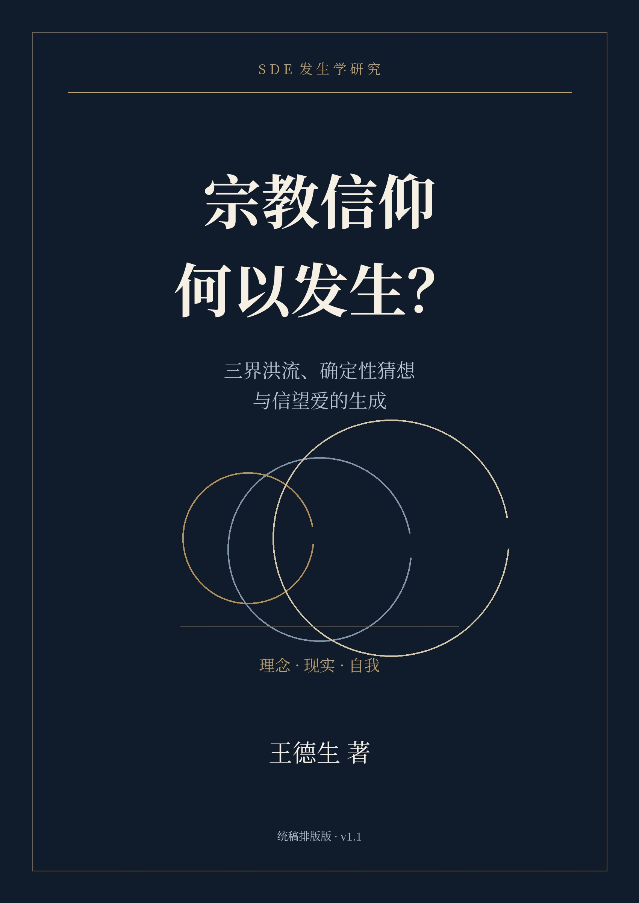
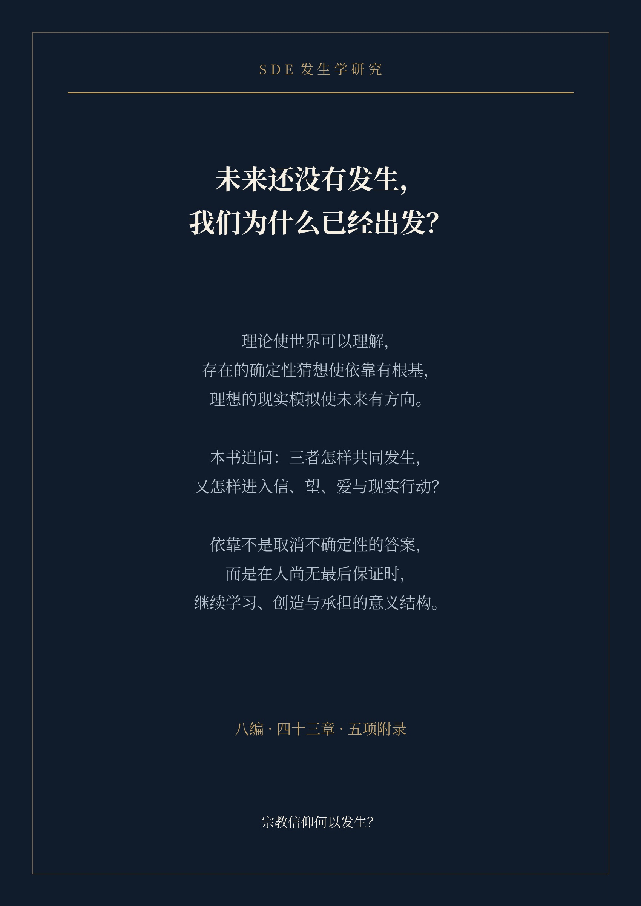

专著书架 · SDE发生学研究

宗教信仰何以发生？
三界洪流、确定性猜想与信望爱的生成
生活不能等到未来全部成为事实之后才开始。信仰如何使人获得依靠，又如何容纳尚未完成的发生？
研究专著 · 正式卷号、ISBN与定价尚待核定；不借用第220号的出版标识。
三重构成，怎样成为一种生命依靠
理论体系将经验组织成可理解的世界，也让理解面对无法容纳的差异。
存在的确定性猜想为投入提供根本支点，同时区分承诺的确定与知识的证明。
理想的现实模拟让未来获得值得走向的形态，又不把图景变成现实必须服从的命令。
全书的道路
从未来的开放性进入理念、现实、自我三界，分析信仰的三重构成及信望爱的承担；以三方程、六路径、三原理追踪形成、稳定、传播与变异，再与宗教传统、经典思想及世俗终极依靠相遇。最后让SDE接受反身检验，并给出可被反驳的研究方案。
五项附录分别处理概念边界、连续构造案例、研究协议、材料使用和修订责任。构造案例、解释性模型与已发表研究分开标明，不把思想图式直接当作经验定律。
作者
王德生，数学博士，SIO主客互动本体论与SDE发生学本体论的提出者。其研究以主体、互动与客体的复合发生为起点，进一步追问显露、差异序列与特征纠缠如何共同形成知识、思想与人的生活世界。
阅读入口

参照第220号《我的三个宝贝》的墨金与暖纸设计语言；本书不属于该书的更新版本。